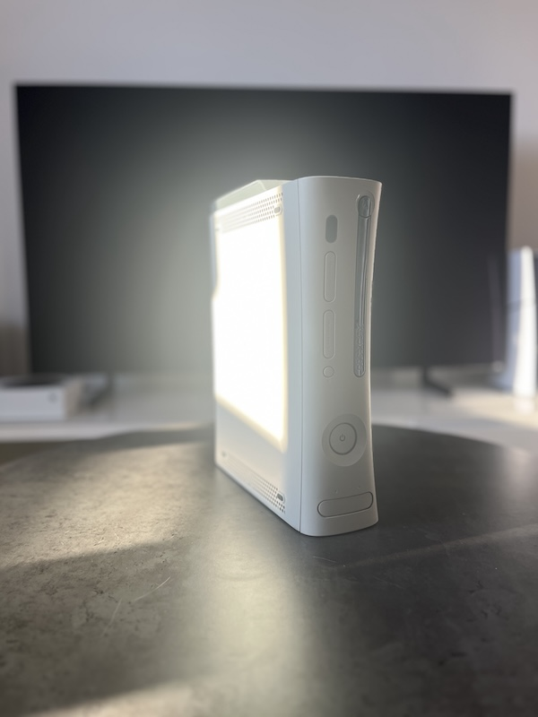
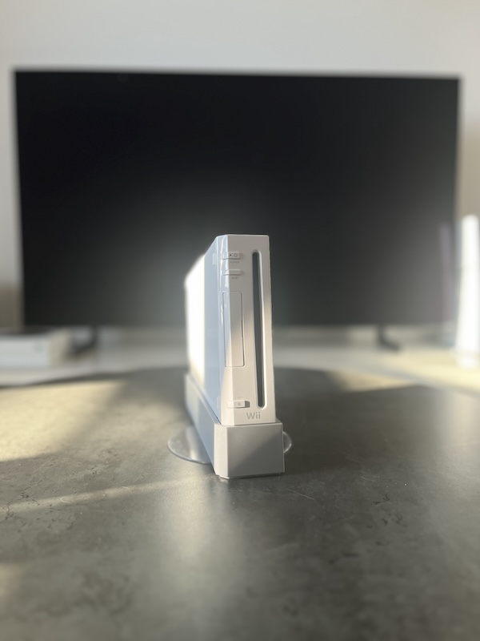
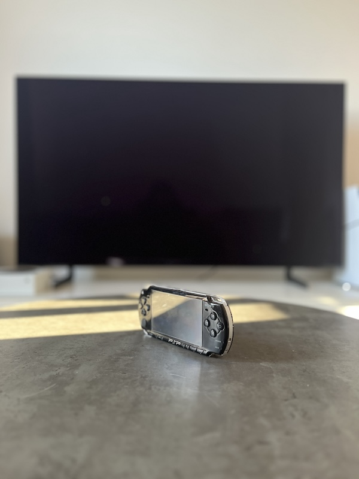
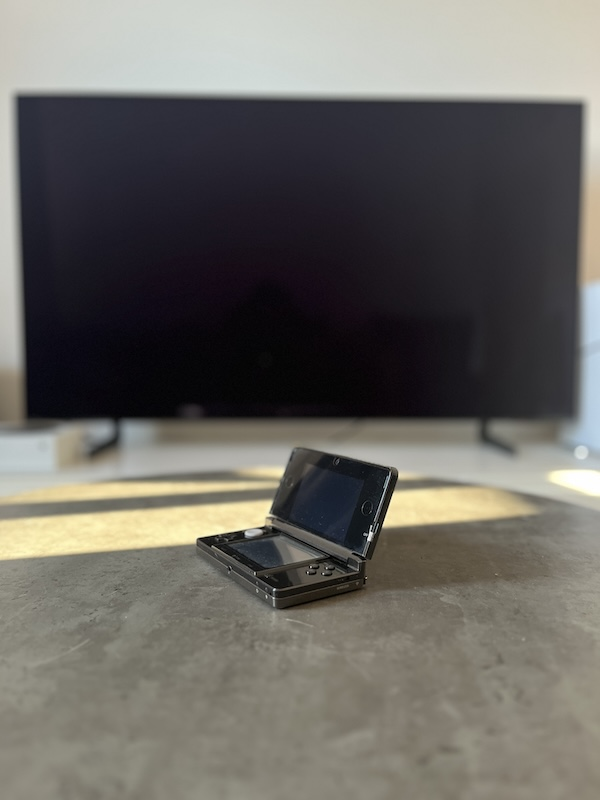
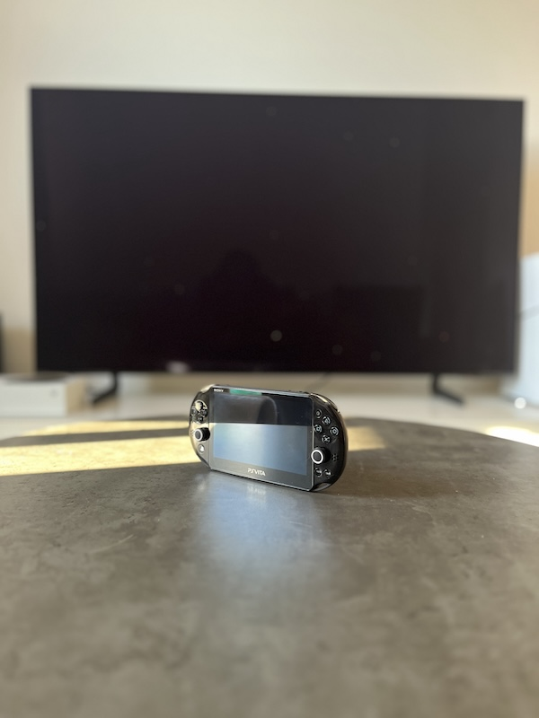
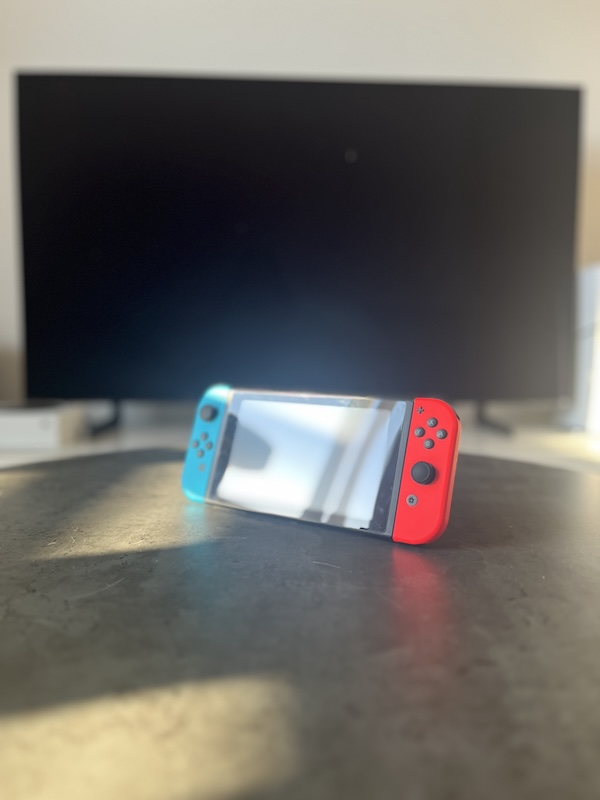
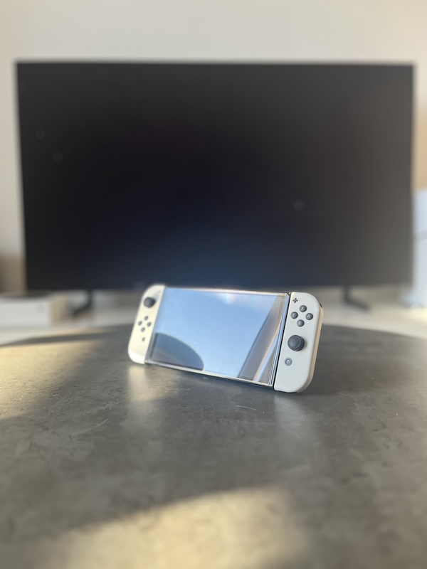
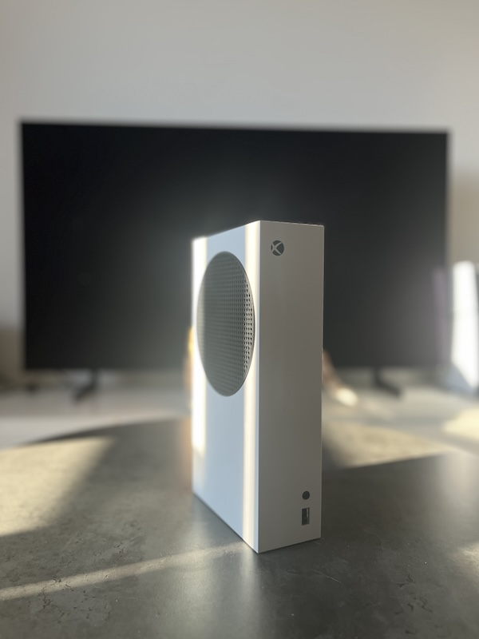
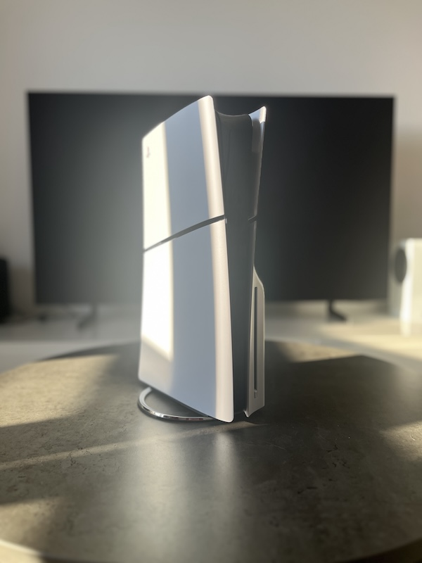

Konsole do gier wydane w XXI wieku, ich historia i ciekawostki
Witaj na mojej stronie poświeconej historii konsol, które zostały wydane w XXI wieku. Oprócz samej historii znajdziesz też moją kolekcję konsol oraz krótkie przemyślenia na ich temat.
___
|[_]|
|+ ;|
`---'
Historia konsol
7. generacja konsol
VII generacja to czas ogromnych skoków technologicznych i całkowitej zmiany sposobu, w jaki postrzegaliśmy elektroniczną rozrywkę. To właśnie w tym okresie domowe konsole zaoferowały po raz pierwszy grafikę w wysokiej rozdzielczości HD oraz upowszechniły szerokopasmowy dostęp do sieci, tworząc nowoczesne standardy grania wieloosobowego i cyfrowej dystrybucji. Była to również era odważnych innowacji w sterowaniu - rynek podbiły kontrolery ruchowe, a w segmencie urządzeń przenośnych zadebiutowały ekrany dotykowe i zaawansowane funkcje multimedialne, zamieniając handheldy w prawdziwe kieszonkowe komputery.
Microsoft Xbox 360
Data wydania:
2005
Wersje i rewizje:
Core, Premium (Pro), Arcade, Elite, Slim (S), E
Nośnik:
Płyty DVD oraz dwuwarstwowe DVD-DL
Kluczowe zmiany
Microsoft zrewolucjonizował podejście do usług sieciowych dzięki płatnej, ale bezkonkurencyjnej usłudze Xbox Live. Konsola wprowadziła system Osiągnięć (Achievements) – wirtualnych punktów za wykonywanie zadań w grach, co błyskawicznie stało się standardem w całej branży. W późniejszym okresie wprowadzono Kinecta – zaawansowany sensor pozwalający na sterowanie interfejsem za pomocą ruchów całego ciała, bez użycia fizycznego kontrolera.
Sony PlayStation 3
Data wydania:
2006 (Japonia/USA), 2007 (Europa)
Wersje i rewizje:
Fat (m.in. 60GB/40GB), Slim, Super Slim
Nośnik:
Płyty Blu-ray (BD-ROM)
Kluczowe zmiany
Konsola przyniosła ogromny skok technologiczny, wprowadzając grafikę w jakości HD. Sony odeszło od płatnej wieloosobowej rozgrywki, tworząc darmową infrastrukturę PlayStation Network. Było to też pierwsze domowe centrum multimedialne Sony z wbudowaną przeglądarką internetową. Wprowadzono bezprzewodowe kontrolery (początkowo Sixaxis, potem DualShock 3) wyposażone w żyroskopy, które wykrywały wychylenie pada w przestrzeni.
PSP było pierwszym przenośnym centrum multimedialnym z prawdziwego zdarzenia. Urządzenie oferowało potężną grafikę 3D, zbliżoną jakościowo do domowego PlayStation 2. Oprócz grania, konsola pozwalała na komfortowe przeglądanie internetu, słuchanie muzyki mp3 oraz oglądanie filmów na dużym, panoramicznym ekranie.
Nintendo Wii
Data wydania:
2006
Wersje i rewizje:
Classic, Family Edition (bez portów GameCube), Wii Mini
Nośnik:
Dyski optyczne Wii Optical Disc
Kluczowe zmiany
Nintendo zrezygnowało z wyścigu na moc obliczeniową i grafikę HD, stawiając w 100% na nowatorskie sterowanie ruchem (Motion Control). Wykorzystano innowacyjne "piloty" (Wii Remote) komunikujące się z sensorem podczerwieni. Pozwalało to na przenoszenie ruchów dłoni gracza bezpośrednio na ekran, symulując np. uderzenie rakietą tenisową czy rzut kulą do kręgli.
Nintendo DS
Data wydania:
2004
Wersje i rewizje:
Classic (Fat), Lite, DSi, DSi XL
Nośnik:
Kartridże (Game Card)
Kluczowe zmiany
Konsola wprowadziła zupełnie nową filozofię projektowania sprzętu przenośnego. Konstrukcja z klapką została wyposażona w dwa ekrany, z czego dolny był dotykowy i obsługiwany za pomocą dołączonego rysika. Wbudowano również mikrofon, dzięki któremu aplikacje mogły reagować na dmuchnięcia czy dźwięk głosu gracza.
8. generacja konsol
VIII generacja upłynęła pod znakiem łączenia graczy, streamingu oraz dynamicznego rozwoju cyfrowych usług. Konsole stały się wszechstronnymi centrami domowej rozrywki, z których za pomocą jednego przycisku można było udostępniać zrzuty ekranu czy transmitować swoją rozgrywkę na żywo w internecie. Był to także czas narodzin rewolucyjnych usług abonamentowych, popularyzacji gogli wirtualnej rzeczywistości oraz niespotykanego wcześniej zjawiska wypuszczania ulepszonych wersji sprzętu w połowie cyklu generacji, aby sprostać rosnącym wymaganiom rozdzielczości 4K.
Xbox One
Data wydania:
2013
Wersje i rewizje:
Fat, S (z napędem 4K UHD), X (potężna wersja dla natywnego 4K)
Nośnik:
Płyty Blu-ray / Ultra HD Blu-ray (modele S i X)
Kluczowe zmiany
Microsoft zaprezentował konsolę jako kompleksowe, domowe centrum rozrywki, zintegrowane z dekoderami telewizyjnymi i systemem Windows. Największą pozytywną rewolucją tej generacji było wprowadzenie usługi Xbox Game Pass – cyfrowego abonamentu przypominającego "Netflixa", dającego natychmiastowy dostęp do bogatej biblioteki tytułów.
PlayStation 4
Data wydania:
2013
Wersje i rewizje:
Fat, Slim, Pro (wsparcie 4K)
Nośnik:
Płyty Blu-ray
Kluczowe zmiany
Sony zmieniło architekturę sprzętu na układ x86 (zbliżony do komputerów PC), co znacznie ułatwiło programistom tworzenie oprogramowania. Zrewolucjonizowano integrację społecznościową – kontroler DualShock 4 otrzymał przycisk Share, pozwalający na błyskawiczne publikowanie zrzutów ekranu i nagrań w sieci. W tej generacji Sony z sukcesem spopularyzowało także wirtualną rzeczywistość za sprawą gogli PS VR.
PlayStation Vita
Data wydania:
2011 (Japonia), 2012 (Świat)
Wersje i rewizje:
PCH-1000 (ekran OLED), PCH-2000 (ekran LCD, odchudzona), PlayStation TV
Nośnik:
Dedykowane karty pamięci PS Vita Card
Kluczowe zmiany
Vita dostarczyła "konsolowe" wrażenia w formie przenośnej. Jako pierwsza zaoferowała dwa niezależne analogi, co zrewolucjonizowało mobilne gry akcji. Wyposażona została w fenomenalny ekran (początkowo OLED) oraz tylny, duży panel dotykowy. Zaawansowana funkcja Remote Play pozwalała na płynne strumieniowanie na Vitę obrazu z domowej konsoli PlayStation 4.
Nintendo Wii U
Data wydania:
2012
Wersje i rewizje:
Basic (8 GB), Deluxe/Premium (32 GB)
Nośnik:
Optyczne płyty Wii U Optical Disc
Kluczowe zmiany
Była to pierwsza konsola Nintendo oferująca grafikę w rozdzielczości HD. Sercem systemu był innowacyjny kontroler "Wii U GamePad" wyposażony we własny, wbudowany ekran dotykowy. Pozwalał on na asymetryczną rozgrywkę lokalną, a także na kontynuowanie zabawy wyłącznie na ekranie pada (Off-TV Play), zwalniając tym samym telewizor dla innych domowników.
Nintendo 3DS
Data wydania:
2011
Wersje i rewizje:
3DS, 3DS XL, 2DS, New 3DS, New 3DS XL, New 2DS XL
Nośnik:
Kartridże
Kluczowe zmiany
Konsola przeniosła rozgrywkę mobilną na nowy poziom, oferując stereoskopowy obraz 3D na górnym ekranie bez konieczności noszenia specjalnych okularów. Głębokość efektu można było regulować fizycznym suwakiem. Wprowadzono także funkcję StreetPass, która pozwalała konsoli uśpionej w plecaku wymieniać małe pakiety danych z urządzeniami innych przechodniów mijanych na ulicy.
9. generacja konsol
IX generacja to przede wszystkim ostateczne starcie z długimi ekranami ładowania i pogoń za maksymalną płynnością. Zastosowanie ultraszybkich dysków SSD całkowicie zmieniło architekturę projektowania gier, pozwalając na błyskawiczne wczytywanie ogromnych, szczegółowych światów. To również okres implementacji zaawansowanego oświetlenia opartego na technologii śledzenia promieni (Ray Tracing) oraz fenomenalnego sukcesu konsol hybrydowych. Te ostatnie udowodniły, że gracze cenią sobie elastyczność i pragną bezproblemowo łączyć wysokiej jakości doświadczenia stacjonarne z graniem w podróży.
Xbox Series
Data wydania:
2020
Wersje i rewizje:
Series X (flagowy, potężny model), Series S (budżetowy, cyfrowy model)
Nośnik:
Ultra HD Blu-ray (tylko w wersji Series X)
Kluczowe zmiany
Microsoft zaproponował dwojakie podejście do rynku, wydając jednocześnie maszynę premium do grania w 4K oraz bardzo tanią, pozbawioną napędu wersję celującą w 1440p. Technologicznym hitem okazała się funkcja Quick Resume, która dzięki dyskom SSD pozwala graczowi płynnie zamrażać i przełączać się między kilkoma uruchomionymi w tle rozbudowanymi tytułami w zaledwie kilka sekund.
PlayStation 5
Data wydania:
2020
Wersje i rewizje:
Standard (z napędem), Digital (bez napędu), Slim (modułowy napęd), Pro
Nośnik:
Ultra HD Blu-ray (w wersji z napędem)
Kluczowe zmiany
Dziewiąta generacja to przede wszystkim pożegnanie z wolnymi dyskami talerzowymi. Sony zastosowało ultraszybki dysk SSD NVMe z unikalną architekturą, co praktycznie wyeliminowało długie ekrany ładowania. Ogromną rewolucją okazał się kontroler DualSense, który wprowadził adaptacyjne spusty (stawiające fizyczny opór pod palcami) oraz precyzyjne wibracje haptyczne, pozwalające "poczuć" np. krople wirtualnego deszczu.
Nintendo Switch
Data wydania:
2017
Wersje i rewizje:
V1, V2 (lepsza bateria), Lite (tylko przenośna), OLED
Nośnik:
Kartridże flash
Kluczowe zmiany
Switch na nowo zdefiniował pojęcie grania, wprowadzając koncepcję konsoli hybrydowej. Urządzenie pozwala na płynne przejście z trybu stacjonarnego na telewizorze do trybu przenośnego poprzez proste wysunięcie tabletu ze stacji dokującej. Odłączane kontrolery Joy-Con wyposażono w zaawansowane silniki haptyczne (HD Rumble), potrafiące z ogromną precyzją symulować wibracje strukturalne.
10. generacja konsol
X generacja to krok w stronę zacierania granic między tradycyjnym, lokalnym sprzętem a nieskończoną mocą obliczeniową usług w chmurze oraz potęgą sztucznej inteligencji. Twórcy platform skupili się na zaawansowanych algorytmach skalowania obrazu wspieranych przez AI, które pozwalają generować fotorealistyczną grafikę przy znacznie mniejszym obciążeniu fizycznych podzespołów. To czas, w którym mobilność nie zmusza już do bolesnych kompromisów wizualnych, a bezproblemowa wsteczna kompatybilność i przenoszenie swoich cyfrowych bibliotek stały się absolutnym, rynkowym standardem.
Nintendo Switch 2
Data wydania:
Okolice 2025/2026
Wersje i rewizje:
Model premierowy
Nośnik:
Nowy format kartridży (Switch 2 Game Card)
Kluczowe zmiany
Kolejna odsłona hybrydowej koncepcji Nintendo, która zatarła jeszcze mocniej granice między sprzętem stacjonarnym a mobilnym. Największą sprzętową rewolucją było wdrożenie technologii wspieranej sztuczną inteligencją – NVIDIA DLSS. Pozwoliło to na drastyczny skok jakości wizualnej, umożliwiając renderowanie na ekranie przenośnym zasobożernych i zaawansowanych graficznie środowisk bez obciążania i przegrzewania podzespołów zasilanych baterią.
Tabela: Zestawienie całkowitej sprzedaży konsol VII-X generacji (w milionach sztuk, stan na 2026 r.)
Generacja
Producent
Konsola
Sprzedaż (mln sztuk)
VII Generacja
Nintendo
Nintendo DS
~ 154.02
Nintendo
Nintendo Wii
~ 101.63
Sony
PlayStation 3
~ 87.40
Microsoft
Xbox 360
~ 84.00
Sony
PlayStation Portable (PSP)
~ 80.00
VIII Generacja
Sony
PlayStation 4
~ 117.20
Nintendo
Nintendo 3DS
~ 75.94
Microsoft
Xbox One
~ 58.00
Sony
PlayStation Vita
~ 15.00
Nintendo
Wii U
~ 13.56
IX Generacja
Nintendo
Nintendo Switch
~ 154.00
Sony
PlayStation 5
~ 92.20
Microsoft
Xbox Series X/S
~ 30.00
X Generacja
Nintendo
Nintendo Switch 2
Brak danych (świeża premiera)
Uwaga: Dane sprzedażowe są wartościami przybliżonymi na podstawie oficjalnych raportów finansowych producentów z początku 2026 roku.
Moja kolekcja
Xbox 360
To jest moja pierwsza konsola, którą posiadam nieprzerwanie od 18 lat. Widać, że nadgryzł ją już ząb czasu, ale wciąż świetnie sobie radzi i wszystko w niej działa! Miałem to szczęście, że moją konsolę nie dotknęło wcześniej wspomnianie red ring of death i przez te wszystkie lata nigdy mnie nie zawiodła. Oczywiście przez ostatnie 10 lat nie używam już jej tak jak kiedyś, a tylko do sporadycznych rozgrywek. Nadal pamiętam jak w wakację pojechaliśmy wraz z tatą i kuzynem do elektromarketu właśnie po tego xboxa, który w zestawie w opakowaniu miał jeszcze 2 gry - Halo 3 oraz Halo Wars. Halo 3 to był wtedy prawdziwy hit, ukończyłem tę grę wiele razy sam, a nawet zdarzyło mi się przejść całą fabułę grając z przyjacielem na podzielonym ekranie. Pamiętam każdą grę, w którą grałem na tym xboxie, zaczynając od przeróżnych gier serii FIFA, kolejnych części Assassin's creed, GTA i kończąc na serii Forza. Wielu powie, że PlayStation 3 w tamtych czasach było lepszym sprzętem (z czym się również zgadzam), ale w moim subiektywnym rankingu najlepszych konsol xbox 360 zawsze znajdzie się na podium, bo przez wiele lat dostarczał mi wiele radości, a ja na kilkanaście lat stałem się xboxiarzem.

Mój pierworodny, ale wciąż w 100% sprawny Xbox 360.
PlayStation 3
Może się to wydawać dość zaskakujące, ale PlayStation 3 nie trafiła w moje posiadanie w trakcie 7. generacji. Już w tekście o moim xboxie 360 wspominałem, że na jakiś czas stałem się fanem tylko jednej konsoli i w mini wojence PlayStation vs Xbox byłem po stronie zielonych. Dlatego PlayStation 3 trafiło w moje posiadanie dopiero rok temu i to po zakupie PlayStation 5! I teraz pytanie, które zapewne pojawiło się w Twojej głowie. Dlaczego kupiłem konsolę z tej samej generacji co xbox 360? Powodody może i są tylko dwa, ale nie są to bylejakie powody, zacznę może od tego drugiego. Ciekawość! Z PlayStation 3 nigdy nie miałem za dużo do czynienia. Grałem na niej kilka razy u znajomego, ale nigdy nie miałem okazji usiąść z kontrolerem w ręcę i przekonać się czym tak naprawdę jest ta konsola. Natomiast tym najważniejszym powodem jest emulacja PlayStation 3, która obecnie jest bardzo trudna ze względu na zastosowany w niej dość nietypowy procesor Cell. Dlatego jeśli gra wyszła tylko na PlayStation 3 i nie została przeportowana na inną konsolę to tak naprawdę jedyną opcją na ogranie tego tytułu jest PlayStation 3. I co ciekawie jest tych gier całkiem sporo. Jeśli chodzi samą konsolę to muszę przyznać, że jestem pod wrażeniem jaką niesamowitą multimedialną maszynę stworzyło Sony. Konsola nie ograniczała się tylko do gier. Mogliśmy na niej odtwarzać filmy blu-ray, muzykę i była też wbudowana przeglądarka internetowa. To wszystko sprawia, że konsola robi wrażenie nawet po prawie 20 latach od swojej premiery.
Slim wygląda bardzo grzecznie w porównaniu do wersji FAT
Nintendo Wii
Wiele razy myślałem o tym, żeby kupić sobie swoje pierwsze Wii. Nie było to oczywiście w czasach, gdy rządziła 7. generacja konsol, bo nawet nie wiedziałem, że coś takiego jak Nintendo Wii istnieje. Dla mnie wtedy liczył się Xbox, a Nintendo kojarzyło mi się tylko z konsolami przenośnymi. To wszystko zmieniło się dopiero po zakupie mojej pierwszej konsoli od Nintendo - Nintendo Switch. Przekonałem się wtedy jak niesamowite są gry od Nintendo i jak wiele mnie przez ten cały czas ominęło. "Muszę to wszystko nadrobić" pomyślałem. I tak narodził się pomysł zakupu najlepiej sprzedającej się konsoli 7. generacji - Nintendo Wii. Oczywiście wcześniej obejrzałem na youtube setki materiałów na ten temat co mnie jeszcze bardziej nakręcało do zakupu Wii i wiesz co? Było warto! Pomimo braku HD i ewidentnie słabszego od konkurencji sprzętu to Nintendo pod względem grywalności bije wszystkich. Wyobraź sobie, że odkąd kupiłem Wii to na wspólnych spotkaniach ze znajomymi gramy tylko na Wii. Udało mi się nawet przekonać moich rodziców do zagrania na Wii i świetnie się przy tym razem bawiliśmy rzucając wirtualne kule do kręgli. Konsola już wtedy łączyła pokolenia i jak widać robi to nadal.

Trzeba przyznać, że w 7. generacji najlepszy design miała konsola od Nintendo
PlayStation Portable
Dla wielu graczy urodzonych na przełomie wieków to właśnie PSP było ich pierwszą konsolą do grania. Pamiętam jak kolega przyniósł do szkoły PSP. Byłem szoku, że tak małe urządzenie potrafi wyświetlać gry z dużych konsol. Ostatecznie sam stałem się właścicielem PSP, mimo że konsola trafiła do mnie dopiero po 17 latach od skończenia podstawówki. Może nie była pieerwszą konsolą w moim życiu, ale była pierwszą konsolą, od której kolekcjonowanie konsol się zaczęło. Szczerze mówiąc to w ogóle nie planowałem kupować tej konsolki i od niej zaczynać kolekcję. W tym czasie bardzo poważnie myślałem o zakupie Nintendo Wii, opowiadałem o tym mojemu dobremu znajomemu. Los chciał, że ów znajomy miał u siebie nieużywane PSP i sprezentował mi je przy najbliższym spotkaniu. Wymieniłem baterię i mimo spędzenia prawie 15 lat w szafce konsola włączyła się jakby ostatnia sesja grania miałą miejsce wczoraj. Sama bryła konsoli jak na dzisiejsze czasy bardzo dobrze się zestarzała i prezentuje się bardzo dobrze. Ergonomia też nie jest najgorsza i da się pograć dłużej niż godzinę bez drętwienia rąk. Gry 3D nadal robią bardzo dobre wrażenie zwłaszcza, że to jest konsola przenośna. Jedynym zastrzeżeniem jakie mam to ekran, który jest najsłabszym elementem tej konsoli. Bardzo widać na nim ghosting przez co ma się wrażenie, że każdy ruch jest rozmazany. Jednak nie było to na tyle uciążliwe żeby przeskodziło mi to w ukończeniu całej kolekcji GoD of War, Gran Turismo czy serii GTA. Za każdym razem gdy gram na PSP mam wrażenie jakbym na chwilę przeniósł się w czasie do lat dzieciństwa, ale tym razem mam swoją wymarzoną kieszonsolkę PSP.

Z daleka wygląda jakby składała się z samego ekranu, jest przeogromny!
Nintendo 3DS
Od zawsze fascynował mnie ekran 3DS'a, który wyświetla obraz 3D bez potrzeby użycia okularów, więc kiedy przyszła mi myśl o powiększenia kolekcji o prawdziwego handhelda od Nintendo to wiedziałem, że musi być to Nintendo 3DS. Byłem bardzo przekonany co do zakupu, ale nie mogłem znaleźć odpowiedniej ceny. Zwłaszcza, że przez ostatnie lata używane konsole Nintendo 3DS bardzo podrożały. Zmotywowany wysokimi cenami zdecydowałem, że poszukam konsoli na wcześniej mi nieznanych japońskich serwisach aukcyjncych. To był strzał w 10tkę. Ceny Nintendo 3DS, były nawet o połowę niższe niż w europie i przy okazji w lepszym stanie. Spędziłem trochę czasu na wyszukaniu idealnego modelu w idealnej cenie i tak o to udało mi się zakupić Nintendo 3DS. Konsolka ma wsteczną kompatybilność, bo korzysta z tych samych kartridży co Nintendo DS, więc bibilioteka wszystkich dostępnych gier na 3DS jest liczona w tysiącach. Mnie najbardziej jednak interesowały gry, które były zaprogramowane z myślą o ekranie 3D. Żaden emulator nie jest w stanie emulować ekranu 3D, a nie zapominajmy, że Nintendo 3DS ma też drugi ekran, który jest dotykowy. Efekt 3D nawet dzisiaj robi ogromne wrażenie, a drugi ekran dotykowy idealnie dopełnia całość. Konsla ma nawet wbudowaną z przodu kamerkę, która jest w stanie wykonać zdjęcia 3D. Oczywiście najważniejsze są gry i jak wspominałem biblioteka gier liczona jest w tysiącach. Są to świetne tytuły, w które gram do teraz! Według mnie jest to handheld ostateczny i prawdopodobnie nigdy więcej coś podobnego nie będzie miało miejsca, bo firmy odeszły od konsol przenośnych i skupiły się na konsolach stacjonarnych. A zapotrzebowanie jest duże, bo ceny Nintendo 3DS szybują w góre i z roku na rok konoslki są co raz droższe.

Górny ekran z 3D, a dolny dotykowy, ale oni to wymyślili!
PlayStation Vita
Vita trafiła w moje ręce dość niedawno i szczerze mówiąc to nie wiem co o niej myśleć. Z jednej strony mocą obliczeniową bije na głowę Nintendo 3DS, a z drugiej strony nie ma na niej za bardzo w co grać. Sony bardzo szybko porzuciło Vitę i już po 2 latach od premiery za bardzo nie było tytułów, które by przekonały konsumenta do zakupu. Pamiętam jak Vita dopiero co wyszła na rynek i jak bardzo chciałem mieć tę konsolkę. Obiecałem sobie, że jak wyjdzie następca PSP to od razu lecę do sklepu i kupuję konsolke. Cena jednak była zaporowa, bo Vita kosztowała tyle samo co konsola stacjonarna więc szybko dałem sobie spokój. Już rok po premierze zapomniałem, że w ogóle PS Vita pojawiła się na rynku. Spzęt sam w sobie jest fenomenalny i zdecydowanie wyprzedził swoje czasy, a OLEDowy ekran musiał robić w 2011 roku niesamowite wrażenie. Swoją Vitę (w wersji slim) tak samo jak 3DS'a sprowadzałem z Japonii za połowę tego ile trzeba zapłacić obecnie w europie. Konsolka bardzo dobrze leży w dłoni, wyświetla bardzo ładny obraz, a gry wyglądają jakbyśmy mieli w ręcę przenośne PS3. Szkoda, że losy Vity (łac. życie) tak się potoczyły i tak szybko sony opuściło ten pełen potencjału sprzęt.

Wygląd? Jest. Moc? Jest. Gry? Gry? (cisza...)
Nintendo Switch
Co tutaj dużo mówić - jest to najlepsza konsola ever! Pamiętam jak długo w raz z moim przyjacielem zastanawialiśmy się nad zakupem Switcha. Każdy z nas miał już wtedy PlayStation 5, albo Xboxa Series i Switch wydawał się zbędnym zakupem. Nic bardziej mylnego! Jak to powiedział przyjaciel mesiąc po zakupie Switcha - Żałuję, że go kupiłem tak późno. W pełni się pod tymi słowami podpisuje. Mimo że w konsoli siedzi już stary procesor od Nvidii to w przypadku Switcha działa tzw. magia nintendo. Gry są tak dobrze dopracowane jeśli chodzi o rozgrywkę, że grafika schodzi na dalszy plan. Posiadam na tę platformę kilkadziesiąt gier i nie żałuję ani jednej wydanej złotówki. Śmiało mogę powiedzieć, że konsola przywróciła mi chęć do grania kiedy myślałem, że pociąg z graniem w gry już mi dawno odjechał. Prawdopodobnie gdyby nie switch to nie zacząłbym kolekcjonować pozostałych konsol i moja przygoda z grami skończyłaby się w 2020 roku. Gdyby ktoś mnie zapytał o moją ulubioną grę wszechczasów to bez zawahania powiedziałbym - The Legend of Zelda: Tears of the Kingdom, która wyszła na switcha. Główną zaletą jest zdecydowanie hybrodowość konsoli. Pomimo braku czasu byłem w stanie np. w drodze do pracy przejść jakiś poziom w grze. Przez to wszędzie, gdzie wiem, że czeka mnie dłuższa podróż zabieram ze sobą pstryka.

Niech cie nie zmyli wygląd zabawki. To potężne urządzenie wyciąga z człowieka jego wewnętrzne dziecko!

Nie wspominałem, że mam wersję OLED?
Xbox Series S
Jest to moja pierwsza konsola obecnej, ale kończącej się już generacji. Z perspektywy czasu myślę, że to był najlepszy zakup w tamtym okresie, bo Series S oferował taniego game pass'a i przy tym gry najnowszej generacji za połowę tego co musiałbym zapłacić za PlayStation 5 czy Xboxa Series X. Świetnie bawiłem się grając na nim w przeróżne tytuły, ale głównie śłużył mi do grania w FIFE. Nie wiele mogę tutaj dodać, bo to jest po prostu poprawna konsola, wprowadziła szybsze czasy ładowania i umożliwia tanie granie. Obecnie nie rozpatrywałbym jej jako wartą zakupu, bo polityka Microsoftu co do konsol zmieniła się dość znacząco, ceny poszybowały, a sama marka Xbox też nie ma za bardzo nic do zaoferowania. Szkoda, że sukces Xboxa 360 wygląda po tych kilkunastu latach bardziej jak wypadek przy pracy niż coś będącego efektem dobrego planu.

Niesamowite, że upchali tyle mocy w tak małym urządzeniu
PlayStation 5
Długo broniłem się przed zakupem mojej pierwszej konsoli od Sony, ale trzeba powiedzieć sobie prawdę w oczy, że w pojedynku Xbox vs PlayStation to PlayStation wygrywało na każdym polu. Sprzedaż, gry, sprzęt, potencjalne premiery gier, to wszystko Sony w tej generacji zrobiło lepiej od Microsoftu. Dodatkowo PlayStation 5 oferuje wsteczną kompatybilność, więc opróćz gier na obecną generacje mogłem zagrać w tytuły, które mnie ominęły przez brak posiadania PlayStation 4. Mimo że PS5 kupiłem dość późno, bo mam ją od ponad roku to nie żałuję zakupu. W tym czasie nadrobiłem większość tzw. gier na wyłączność, a także doceniłem kunszt twórców gier na tę platformę. Muszę przyznać, że PS5 trochę się przyczyniło do tego, że zacząłem zbierać konsole starsze konsole, bo kilka miesięcy od zakupu dostałem od znajomego swoje pierwsze PSP, a potem kupiłem używane PS3. To dość zabawne, że przygodę z Sony zacząłęm dopiero od PS5 patrząc na to, że obecnie posiadam najwięcej konsol właśnie od Sony.

Po tylu latach od premiery PS5 nadal nie przyzwyczaiłem się do tego "futurystycznego wyglądu"